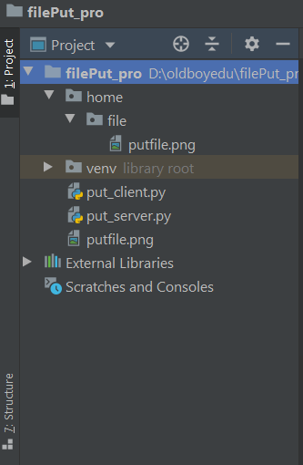

一、程序说明

1、文件上传目标路径：home/file
2、目标文件：putfile.png
3、服务端代码：put_server.py
4、客户端代码：put_client.py
二、各部分代码
1、服务端代码：put_server.py
1 #!/usr/bin/env python
2 # -*- coding:utf-8 -*-
3 """
4 实现文件断点续传的服务器端
5 """
6
7 import socket
8 import os
9
10 BASE_DIR = os.path.dirname(os.path.dirname(__file__))
11
12 home = os.path.join(BASE_DIR, "home/file")
13 sk = socket.socket()
14 sk.bind(('127.0.0.1', 8001))
15 sk.listen(5)
16
17 while True:
18 print("Waiting....")
19 conn, addr = sk.accept()
20 conn.sendall(bytes('欢迎登录', encoding='utf-8'))
21 flag = True
22 while flag:
23 client_bytes = conn.recv(1024) #接收客户端发送过来的内容
24 client_str = str(client_bytes, encoding='utf-8') #将内容转换成字符串
25
26 # 将客户端发送过来的内容以"|"拆分为:命名方法，文件名，文件大小，目标路径
27 func, file_name, file_byte_size, targe＿path = client_str.split('|', 3)
28 file_byte_size = int(file_byte_size)
29 path = os.path.join(home, file_name)
30 has_received = 0
31
32 #首先判断该路径下是否已存在文件
33 if os.path.exists(path):
34 conn.sendall(bytes("2003", encoding='utf-8')) #发送通知客户端，该文件已存在
35 is_continue = str(conn.recv(1024), encoding='utf-8') #等待客户端选择回复
36 if is_continue == "2004":
37 has_file_size = os.stat(path).st_size
38 conn.sendall(bytes(str(has_file_size), encoding='utf-8')) #将已接收的文件大小给客户端
39 has_received += has_file_size
40 f = open(path, 'ab')
41 else:
42 f = open(path, 'wb')
43 else:
44 conn.sendall(bytes("2002", encoding='utf-8'))
45 f = open(path, 'wb')
46
47 while has_received < file_byte_size:
48 try:
49 data = conn.recv(1024)
50 if not data:
51 raise Exception
52 except Exception:
53 flag = False
54 break
55 f.write(data)
56 has_received += len(data)
57 print("文件已接收完成！")
58 f.close()
2、客户端代码：put_client.py
1 #!/usr/bin/env python
2 # -*- coding:utf-8 -*-
3 """
4 实现文件断点续传的客户端
5 """
6
7 import socket
8 import sys
9 import re
10 import os
11 FILE_DIR = os.path.dirname(__file__)
12
13 ck = socket.socket()
14 ck.connect(('127.0.0.1', 8001))
15 print(str(ck.recv(1024), encoding='utf-8'))
16
17
18 #定义一个函数，计算进度条
19 def bar(num = 1, sum = 100):
20 rate = float(num) / float(sum)
21 rate_num = int(rate * 100)
22 temp = '\r%d %%' % (rate_num)
23 sys.stdout.write(temp)
24
25 while True:
26 inp = input('请输入（内容格式：post|文件路径 目标路径）: \n >>> ').strip() #输入内容格式：命令|文件路径 目标路径
27 func, file_path =inp.split("|", 1) #将输入的内容拆分为两部分，方法名和路径
28 local_path, target_path = re.split("\s*", file_path, 1) #再将路径部分，通过正则表达式。以空格拆分为：文件路径和上传的目标路径
29 file_byte_size = os.stat(local_path).st_size #获取文件的大小
30 file_name = os.path.basename(local_path) #设置文件名
31
32 post_info = "post|%s|%s|%s" % (file_name, file_byte_size, target_path) #将发送的内容进行拼接
33 ck.sendall(bytes(post_info, encoding='utf-8')) #向服务器端发送内容
34
35 result_exist = str(ck.recv(1024), encoding='utf-8')
36 has_sent = 0
37 if result_exist == "2003":
38 inp = input("文件已存在，是否续传？Y/N:").strip()
39 if inp.upper() == 'Y':
40 ck.sendall(bytes("2004", encoding='utf-8'))
41 result_continue_pos = str(ck.recv(1024), encoding='utf-8') #已经传输了多少的文件内容
42 print(result_continue_pos)
43 has_sent = int(result_continue_pos)
44
45 else:
46 ck.sendall(bytes("2005", encoding='utf-8')) #发送2005代表不续传
47
48 file_obj = open(local_path, 'rb') #对文件进行读操作
49 file_obj.seek(has_sent) #调整指针
50
51 while has_sent < file_byte_size:
52 data = file_obj.read(1024)
53 ck.sendall(data)
54 has_sent += len(data)
55 bar(has_sent, file_byte_size) #进度条
56
57 file_obj.close()
58 print("文件上传成功！")